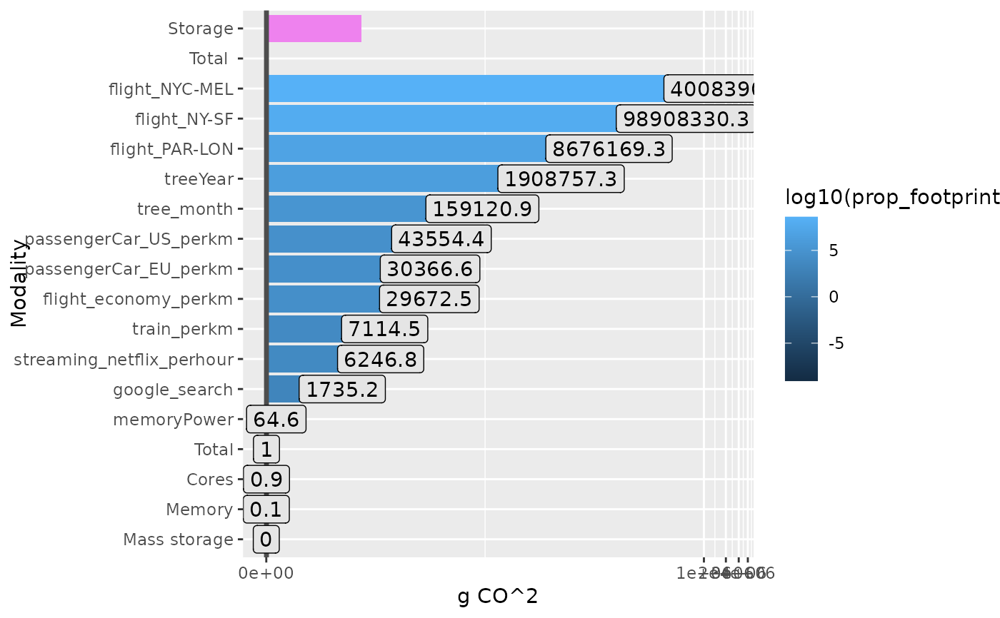

It is mainly a wrapper of function ga_footprint() that compute run time and
mass_storage (only used if add_storage_estimation = TRUE) using
targets::tar_meta().
Usage
ga_targets(
names_targets = NULL,
targets_only = TRUE,
complete_only = FALSE,
store = targets::tar_config_get("store"),
tar_meta_raw = NULL,
...
)Arguments
- names_targets
Optional, names of the targets. See ?targets::tar_meta()
- targets_only
Logical, whether to just show information about targets or also return metadata on functions and other global objects.
- complete_only
Logical, whether to return only complete rows (no NA values).
- store
Character of length 1, path to the targets data store. See ?targets::tar_meta()
- tar_meta_raw
Optional, if not NULL, other listed options above (params for
targets::tar_meta()are not used.- ...
Other args to be passed on
ga_footprint()
Examples
# In a targets folder, just run function ga_targets()
# with the options you want
# The next exemple emulate a mini-targets before to ask for tar_meta
tar_dir({ # tar_dir() runs code from a temp dir for CRAN.
tar_script(
{
list(
tar_target(
name = waiting,
command = Sys.sleep(2),
description = "Sleep 2 seconds"
),
tar_target(x, writeLines(
targets::tar_option_get("error"),
"error.txt"
))
)
},
ask = FALSE
)
tar_make()
tm <- tar_meta()
res_gat <-
ga_targets(
tar_meta_raw = tm,
n_cores = 6,
TDP_per_core = 15.8,
location_code = "FR",
PUE = 2,
add_storage_estimation = TRUE
)
ggplot(res_gat$ref_value, aes(
y = reorder(variable, as.numeric(value)),
x = as.numeric(value), fill = log10(prop_footprint)
)) +
geom_col() +
geom_col(data = data.frame(
variable = "Total ",
value = res_gat$carbon_footprint_total_gCO2
), fill = "grey30") +
geom_col(
data = data.frame(
variable = "Cores",
value = res_gat$carbon_intensity * res_gat$power_draw_for_cores_kWh
),
fill = "darkred"
) +
geom_col(
data = data.frame(
variable = "Memory",
value = res_gat$carbon_intensity * res_gat$power_draw_for_memory_kWh
),
fill = "orange"
) +
geom_col(
data = data.frame(
variable = "Storage",
value = res_gat$carbon_intensity * res_gat$power_draw_per_gb
),
fill = "violet"
) +
scale_x_continuous(trans = "log1p") +
geom_vline(
xintercept = res_gat$carbon_footprint_total_gCO2,
col = "grey30", lwd = 1.2
) +
geom_label(aes(label = round(prop_footprint, 1)), fill = "grey90") +
xlab("g CO^2") +
ylab("Modality")
})
#> ▶ dispatched target x
#> ● completed target x [0 seconds, 44 bytes]
#> ▶ dispatched target waiting
#> ● completed target waiting [2.002 seconds, 44 bytes]
#> ▶ ended pipeline [2.068 seconds]
#>
